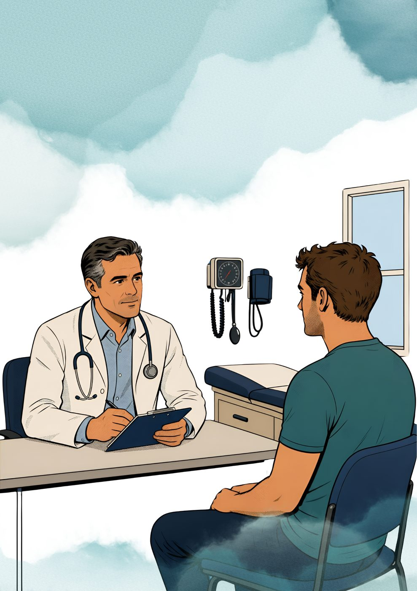

GP vs. Internal Medicine Specialist: What's the Difference?
A General Practitioner (GP) is usually your first point of contact for everyday health concerns. An Internal Medicine Specialist — also called a consultant physician or internist — has completed years of additional postgraduate training focused on diagnosing and managing complex, chronic, or multiple overlapping adult illnesses.
What a GP handles well
A GP is trained broadly across all ages and conditions — colds, minor injuries, vaccinations, routine check-ups, and straightforward, single-issue problems. For most everyday health concerns, a GP is exactly the right first stop, and many issues never need to go further than that.
When it's worth seeing an internist directly
- Your symptoms are unclear, or haven't improved with standard treatment
- You're managing several conditions at once (for example, diabetes alongside joint pain)
- You'd like a more comprehensive check-up or a second opinion
- You have a complex or long-standing condition that needs closer, ongoing monitoring
Internists are also frequently involved in hospital inpatient care, coordinating between different specialists when a patient's picture doesn't fit neatly into one category.
A whole-patient approach
Dr. Joorawon Aslam sees patients in Centre de Flacq, Rivière du Rempart, and Aegle Clinic for exactly this kind of whole-patient assessment, with a particular interest in infectious diseases and rheumatological conditions. Rather than treating one symptom in isolation, the goal is to understand how everything connects — which often changes both the diagnosis and the treatment plan.
If you're unsure which route is right for your situation, it's perfectly reasonable to ask directly before booking.
Have a question about your own symptoms? Message directly and ask.
Message on WhatsAppThis article is general health information and does not replace a medical consultation. In a medical emergency, call SAMU (114) or go to your nearest hospital.